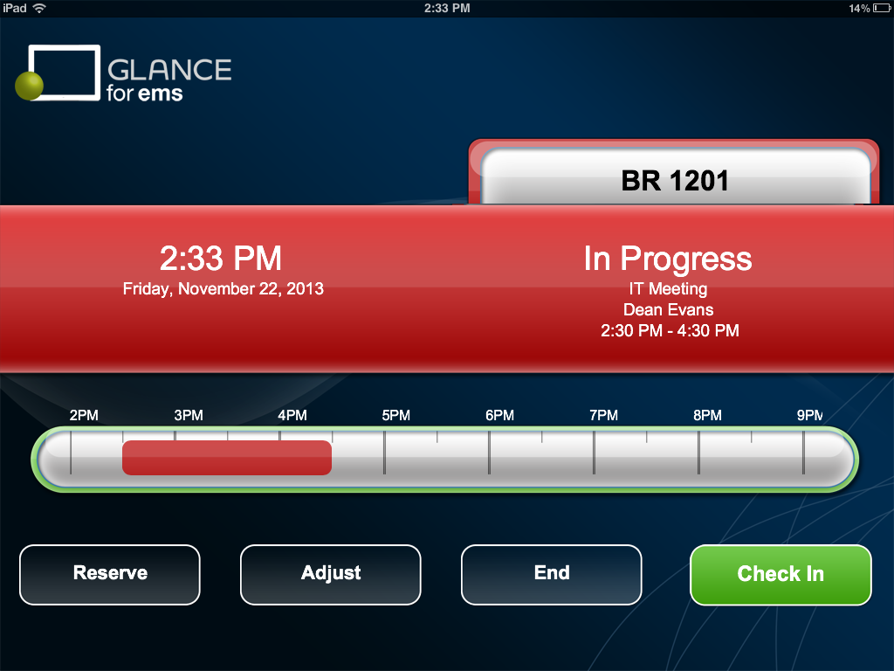

|
Description |
|---|---|
|
Display Check In Button |
If set to Yes, then a Check In button is displayed on both the Available screen and the In Progress screen. See the Available screen with Check In button and In Progress screen with Check In button. |
|
Activate Check In Button ## Minutes Before Booking Start Time |
If the Display Check In Button is set to Yes, then this value determines how many minutes in advance of an upcoming meeting the Check In button is displayed. |
|
Enable Automatic Cancellation |
If set to Yes, users are required to push the Check In button to check into their meetings. If a user does not push the Check In button within the interval set in the Automatic Cancellation Interval setting, EMS Glance automatically cancels the booking in EMS. If set to No, and a user checks in before an event starts, then EMS Glance adjusts the booking start time to the current time (assuming another meeting isn’t currently in progress). If set to Yes and a user checks in before an event starts, then EMS Glance adjusts the booking start time to the current time (assuming another meeting isn’t currently in progress) and the user is checked into the meeting. If a user does not check in before the elapsed time that is defined in the Automatic Cancellation Interval setting, then the meeting is automatically canceled. |
|
Requires Enable Automatic Cancellation to be set to Yes. If a user does not push the Check In button for a meeting within the set interval, EMS Glance automatically cancels the booking in EMS. |
|
|
Default Status for Canceled Booking |
The status to which a booking is changed if an event is automatically canceled. Requires Enable Automatic Cancellation to be set to Yes. |
|
Default Cancel Reason for Cancellations |
The Cancel Reason to which a booking is changed if an event is automatically canceled. Requires Enable Automatic Cancellation to be set to Yes. |
Available screen with Check In button

In Progress screen with Check In button
